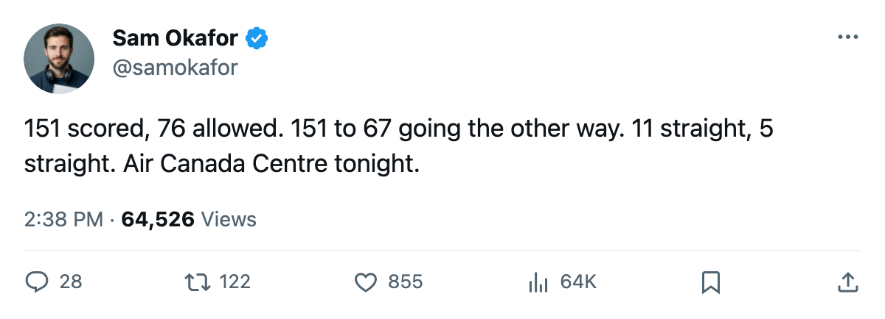

League-best offense meets East-best defense when the Devils visit the Air Canada Centre
Toronto scores 5.8 a night. New Jersey allows 2.9. Both streaks are live, and tonight one of them ends.
 Sam OkaforLeafs beat reporter · Queen City Telegram
Sam OkaforLeafs beat reporter · Queen City Telegram
The  Toronto Maple Leafs Maple Leafs host the
Toronto Maple Leafs Maple Leafs host the  New Jersey Devils Devils tonight at the Air Canada Centre, in the sharpest statistical contrast the Eastern Conference has put up all season. Toronto has scored 151 goals in 26 games, the most in the league. New Jersey has allowed 67 goals in 23 games, the fewest in the conference.
New Jersey Devils Devils tonight at the Air Canada Centre, in the sharpest statistical contrast the Eastern Conference has put up all season. Toronto has scored 151 goals in 26 games, the most in the league. New Jersey has allowed 67 goals in 23 games, the fewest in the conference.
Toronto Maple Leafs leads the Northeast at 42 points in 26 games. The Devils sit 2nd in the Atlantic at 39 points in 23, behind the  New York Rangers at 40 in 29. Both are on winning streaks: the Maple Leafs at 11, the Devils at 5.
New York Rangers at 40 in 29. Both are on winning streaks: the Maple Leafs at 11, the Devils at 5.
The defensive profiles are closer than the headline suggests. Toronto allows 2.9 per game; New Jersey allows 2.9 per game. The difference is on the other end. Toronto puts up 5.8 a night to New Jersey's 4.2.
New Jersey Devils is 9-1 on the road, the best away mark in the East. Two injuries bite into the lineup.  Patrik Elias85 has been out since before the first of December and returns 2004-12-12.
Patrik Elias85 has been out since before the first of December and returns 2004-12-12.  Jamie Langenbrunner87 joined the injured list this week, out until 2004-12-30. That's the first-line winger and the fourth-line power forward, so the top-end scoring and the penalty kill both get thinner.
Jamie Langenbrunner87 joined the injured list this week, out until 2004-12-30. That's the first-line winger and the fourth-line power forward, so the top-end scoring and the penalty kill both get thinner.
On the Toronto side,  David Aebischer86 starts in net. He's appeared in 14 games this season, including two consecutive shutouts.
David Aebischer86 starts in net. He's appeared in 14 games this season, including two consecutive shutouts.  Ed Belfour93 is G2 at 39 years old with 10 starts.
Ed Belfour93 is G2 at 39 years old with 10 starts.
| Toronto Maple Leafs | New Jersey Devils | |
|---|---|---|
| GP | 26 | 23 |
| Points | 42 | 39 |
| GF | 151 | 96 |
| GA | 76 | 67 |
| GF/GP | 5.8 | 4.2 |
| GA/GP | 2.9 | 2.9 |
| Streak | W11 | W5 |
| Home | 14-3 | 9-4 |
| Away | 7-2 | 9-1 |
Toronto has lost 3 home games all season. New Jersey has lost 1 on the road.
